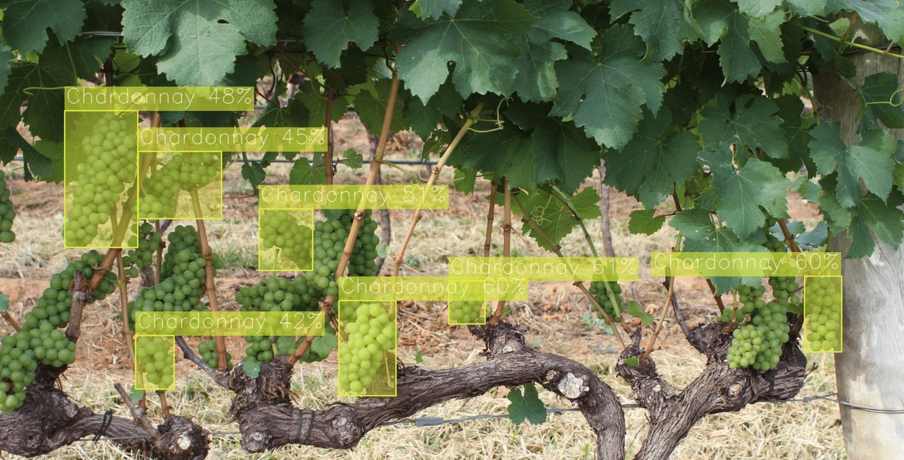

Deploy & Demo#
This guide explains how to export, optimize, validate and deploy a model trained in the previous stage and visualize it outside of this repository. As a result of this step, you’ll get the exported model together with the self-contained python package and a demo application to visualize results in other environments without a long installation process.
Export#
Note
“export” method should be implemented within a framework engine like OTXEngine to be able to export the model. Optimization and validation steps are required to use OVEngine.
1. Activate the virtual environment created in the previous step.
source .otx/bin/activate
# or by this line, if you created an environment, using tox
. venv/otx/bin/activate
2. otx export returns an .onnx, openvino.xml(.bin) and .zip
exportable code with demo depending on the export type passed to CLI or API.
You can export the model in OpenVINO format and FP32
using the command below. Specify the path to the trained PyTorch model using --checkpoint parameter:
(otx) ...$ otx export -c CONFIG --checkpoint CHECKPOINT --export_format {ONNX,OPENVINO} --export_precision {FP16,FP32} --work-dir WORK_DIR
from otx.backend.native.engine import OTXEngine
engine = OTXEngine(model="path/to/model.yaml", data="path/to/data_root", work_dir="otx-workspace")
exported_model_path = engine.export()
otx export -c CONFIG --checkpoint CHECKPOINT --export_format {ONNX,OPENVINO,EXPORTABLE_CODE} --export_precision {FP16,FP32} --work-dir WORK_DIR
You can also specify export_format nad export_precision parameters.
For example, to export a model with precision FP16 and format ONNX, execute:
otx export -c CONFIG --checkpoint CHECKPOINT --export_format ONNX --export_precision FP16 --work-dir outputs/deploy
(otx) ...$ otx export --config CONFIG --checkpoint CHECKPOINT --export_format ONNX --export_precision FP16 --work-dir WORK_DIR
exported_onnx_path = engine.export(export_format="ONNX", export_precision="FP16")
3. You can check the accuracy of the exported OpenVINO™ IR model and ensure consistency between the exported model and the original PyTorch model using OVEngine. Note: CLI functionality is currently not supported for the OpenVINO Engine.
from otx.backend.openvino.engine import OVEngine
ov_engine = OVEngine(model=exported_model_path, data=engine.datamodule, work_dir=engine.work_dir)
ov_engine.test()
If you also want to export saliency_map, a feature related to explain, and feature_vector information for XAI, you can do the following:
(otx) ...$ otx export ... --checkpoint otx-workspace/20240312_051135/checkpoints/epoch_014.ckpt --explain True
exported_model_path = engine.export(..., explain=True)
Predict#
1. After exporting the model, we can use it for inference on the testing dataset or on a list of numpy images.
To obtain list of predictions on the given test dataset, we can use the OVEngine.predict() method:
predictions = engine.predict(checkpoint=exported_model_path)
# it is also possible to pass test datamodule or dataset for prediction
predictions = engine.predict(checkpoint=exported_model_path, data="path/to/new/test/dataset")
# or
from otx.data.datamodule import OTXDataModule
predictions = engine.predict(data=OTXDataModule(...))
2. Similarly, it is possible to pass a list of
numpy images to the OVEngine.predict() method:
predictions = engine.predict(data=[numpy_image1, numpy_image2, ...])
Optimize#
1. We can further optimize the model with OVEngine.
It uses PTQ depending on the model and transforms it to INT8 format.
PTQ optimization is used for models exported in the OpenVINO™ IR format. It decreases the floating-point precision to integer precision of the exported model by performing the post-training optimization.
To learn more about optimization, refer to NNCF repository.
2. Command example for optimizing OpenVINO™ model (.xml) with OpenVINO™ PTQ. Note: CLI functionality is currently not supported for the OpenVINO Engine.
optimized_model_path = ov_engine.optimize()
The optimization time highly relies on the hardware characteristics, for example on Intel(R) Core(TM) i9-10980XE it took about 9 seconds. Please note, that PTQ will take some time without logging to optimize the model.
3. Finally, we can also evaluate the optimized model by passing it to the OVEngine.test().
metric = ov_engine.test(checkpoint=optimized_model_path)
Now we have fully trained, optimized and exported an efficient model representation.
Deploy#
1. It is also possible to obtain a .zip archive with OpenVINO model and demo to run on your own testing images with visualization possibility.
The exported archive will consist of the following file structure:
LICENSEREADME.mdmodel
model.xmlandmodel.bin- model exported to the OpenVINO™ formatconfig.json- file containing the post-processing info and meta information about labels in the dataset
python
demo_package- package folder with necessary modules needed to run demodemo.py- simple demo to visualize results of model inferencerequirements.txt- minimal packages required to run the demosetup.py
2. You can obtain the demo with the model, using the command below:
engine.export(export_format="OPENVINO", export_demo_package=True, work_dir="outputs/deploy")
(otx) ...$ otx export -c CONFIG
--checkpoint {PYTORCH_CHECKPOINT}
--export_format OPENVINO
--export_demo_package True
--work-dir outputs/deploy
After that, you can use the resulting exportable_code.zip archive in other applications.
Demonstration#
Using the exported demo, we’re able to run the model in the demonstration mode outside of this repository, using only the ported .zip archive with minimum required packages.
The demo allows us to apply our model on the custom data or the online footage from a web camera and see how it will work in a real-life scenario. It is not required to install OTX or PyTorch.
1. Unzip the exportable_code.zip
archive.
unzip outputs/deploy/.latest/export/exportable_code.zip -d outputs/deploy/
2. To run the demo in exportable code, we can use a brand-new virtual environment, where we need to install a minimalistic set of packages required for inference only.
python3 -m venv demo_venv --prompt="demo"
source demo_venv/bin/activate
python -m pip install -e .
3. The following line will run the demo on your input source,
using the model in the model folder. You can pass as input a single image, a folder of images, a video file, or a web camera id.
(demo) ...$ python outputs/deploy/python/demo.py --input docs/utils/images/wgisd_dataset_sample.jpg \
--model outputs/deploy/model
You can press Q to stop inference during the demo running.
For example, the model inference on the image from the WGISD dataset will look like this:
{kind=link}

Note
If you provide a single image as input, the demo processes and renders it quickly, then exits. To continuously
visualize inference results on the screen, and apply the loop option, which enforces processing a single image in a loop.
In this case, you can stop the demo by pressing Q button or killing the process in the terminal (Ctrl+C for Linux).
To learn how to run the demo on Windows and MacOS, please refer to the outputs/deploy/python/README.md file in exportable code.
4. To save inference results with predictions on it, we can specify the folder path, using --output.
It works for images, videos, image folders and web cameras. To prevent issues, do not specify it together with a --loop parameter.
(demo) ...$ python outputs/deploy/python/demo.py --input docs/utils/images/wgisd_dataset_sample.jpg \
--model outputs/deploy/model \
--output resulted_images
5. To run a demo on a web camera, we need to know its ID. We can check a list of camera devices by running this command line on Linux system:
sudo apt-get install v4l-utils
v4l2-ctl --list-devices
The output will look like this:
Integrated Camera (usb-0000:00:1a.0-1.6):
/dev/video0
After that, we can use this /dev/video0 as a camera ID for --input.